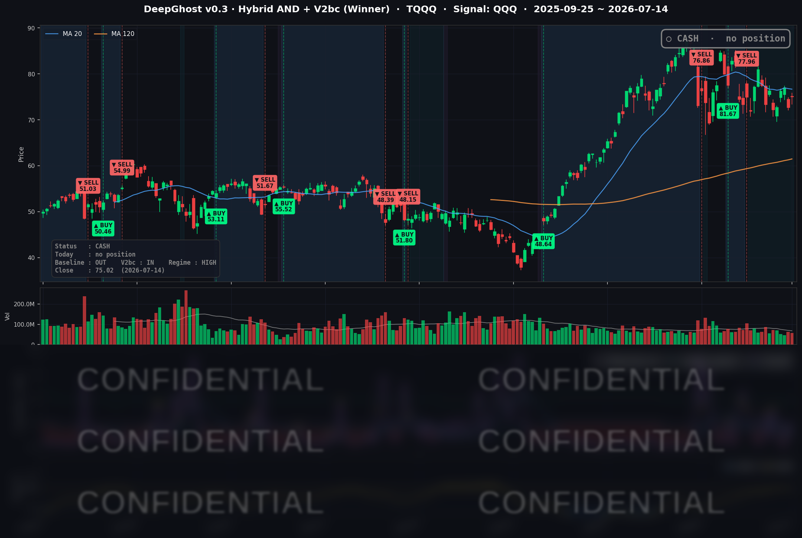

👻 매일 시그널과 히스토리를 홈페이지에서 한눈에 → www.ghostai.co.kr
6월 물가가 예상보다 크게 식으면서 반도체·기술주가 반등했습니다. 하지만 아직 안도하기는 이릅니다. 오늘은 어제 하락과 정반대 흐름으로 조울증 장세가 이어지고 있습니다. 아직 방향성이 잡히지 않았고 물가 지수 3.5%가 과연 낮은가? 라는 의문은 여전합니다. 연준의 목표 물가 지수는 2% 이하임을 염두해 두시기 바랍니다.
📊 오늘의 매매 신호
| 항목 | 내용 |
|---|---|
| 오늘 할 일 | ✅ 아무것도 안 해도 됩니다 |
| 포지션 상태 | 💵 현금 보유 중 (OUT OF POSITION) |
| 현금 보유 기간 | 2026-06-25 ~ 2026-07-14 (20일) |
| TQQQ 종가 | $75.02 (+3.28%) |
지난 6/25 매도 이후 전략은 계속 현금 상태를 유지하고 있습니다. 이날 TQQQ가 하루 +3.28% 반등했지만, 전략은 아직 재진입 조건을 갖추지 못했다고 판단해 관망을 이어갔습니다.
TQQQ 시그널 — OUT OF POSITION
현재 상태: 현금 보유 중 | 6/25 매도 이후 관망 지속

오늘 미국 시장 — 시황 요약
예상보다 크게 식은 6월 소비자물가(CPI)가 안도 랠리를 촉발했습니다. 긴축 부담이 완화될 것이라는 기대에 나스닥과 반도체가 앞장서며 지수를 끌어올렸습니다. 다만 상승의 폭은 넓지 않았습니다. 다우는 사실상 보합에 그쳤고, 상승 동력이 반도체와 일부 대형 성장주에 집중된 하루였습니다.
지수 마감
| 지수 | 종가 | 등락률 |
|---|---|---|
| S&P 500 | 7,543.59 | +0.38% |
| 나스닥 종합 | 26,107.01 | +0.90% |
| 다우존스 | 52,508.27 | +0.02% |
| 러셀 2000 | 2,964.76 | +0.39% |
나스닥(+0.90%)이 지수를 이끌었고, QQQ는 +1.12%, TQQQ는 +3.28% 올랐습니다. 반면 다우는 +0.02%로 제자리였습니다. 지수 사이의 온도차가 컸던 하루로, 물가 완화의 수혜가 성장·기술 섹터에 몰린 전형적인 위험선호 흐름이었습니다.
국채 금리 동향
| 만기 | 수익률 | 전일 대비 |
|---|---|---|
| 3개월 (^IRX) | 3.700% | -2.8bp |
| 5년 (^FVX) | 4.321% | -4.2bp |
| 10년 (^TNX) | 4.585% | -2.4bp |
| 30년 (^TYX) | 5.094% | -0.4bp |
물가 지표가 예상을 밑돌면서 커브 전 구간의 금리가 소폭 내렸습니다. 특히 중기물인 5년물(-4.2bp)의 하락폭이 가장 컸는데, "임박한 추가 긴축" 베팅이 다소 후퇴했음을 보여줍니다. 10년물에서 3개월물을 뺀 장단기 스프레드는 +88.5bp로 곡선은 정상(우상향)을 유지했고, 역전은 아닙니다. 금리 부담 완화는 밸류에이션이 높은 성장·기술주에 우호적으로 작용해 이날 반등을 뒷받침했습니다. 다만 30년물은 여전히 5%를 넘긴 채(5.094%)로, 장기 인플레이션·재정 부담에 대한 경계는 남아 있습니다.
연준 발언 & 금리 패스
이날 케빈 워시 신임 연준 의장이 하원 금융서비스위원회에서 첫 의회 증언에 나섰습니다. 그는 "연준은 지속적으로 높은 인플레이션에 무관용(no tolerance)이며 물가 안정 회복에 확고히 전념한다"고 밝혔고, 6월의 물가 하락에 대해서도 "임무 완수(Mission Accomplished)는 아니다"라며 승리 선언을 경계했습니다. 다음 정책 행보에 대한 힌트는 주지 않았습니다. 전날에는 크리스토퍼 월러 이사가 "이번 주 근원 물가가 다시 뜨겁게 나오면 근시일 내 긴축을 고려해야 한다"는 조건부 매파 발언을 내놓기도 했습니다. 정리하면, 연준의 어조는 여전히 매파적입니다. 소프트한 물가 지표가 "다음 회의 인상" 시나리오의 확률은 낮췄지만, 시장 컨센서스는 여전히 9월 인상 가능성을 우세로 봅니다.
오늘의 핵심 이슈
- 6월 물가의 서프라이즈 하락 — 헤드라인 CPI가 연율 3.5%로 컨센서스(3.8%)를 크게 밑돌았고, 근원 물가도 2.6%로 예상(2.9%)을 하회했습니다. 에너지(휘발유 급락)와 주거비 둔화가 견인했습니다. 긴축 압력이 누그러질 것이라는 기대가 이날 성장주 랠리의 방아쇠였습니다.
- AI 트레이드가 GPU를 넘어 메모리로 확산 — 한 증권사가 마이크론 목표가를 대폭 상향하며 D램·낸드·HBM의 공급 부족이 2027년까지 이어진다는 전망을 내놨습니다. 메모리주가 급등(MU +4.92%)했고, AI 관련 매수세가 GPU를 넘어 반도체 전반으로 번졌습니다.
- IBM 실적 경고의 역설 — IBM이 기업 지출이 소프트웨어에서 AI 인프라로 옮겨가고 있다며 실적을 경고해 주가가 크게 빠졌습니다. 다우 상승을 제약했지만, 역설적으로 "돈이 AI 인프라로 이동 중"이라는 서사를 검증하며 반도체 수요 기대를 오히려 강화했습니다.
변동성 & 투자심리
VIX는 17.16에서 16.50으로 -3.85% 내리며 안도 랠리 속 저변동성 국면을 확인했습니다. 20을 크게 밑도는 안정 구간입니다. 반면 CNN 공포탐욕 지수는 약 44로 여전히 "공포(Fear)" 구간에 머물렀습니다(전주 약 49.5에서 하락). 지수와 변동성은 위험선호를 가리키지만 투자심리는 아직 신중하다는 뜻입니다. 다우 보합, 러셀 2000의 상대 부진과 함께, 이날 상승이 반도체·대형 성장주에 집중된 "좁은 랠리"였음을 보여주는 대목입니다.
매크로 & 원자재
- WTI $79.94 (+2.30%), 브렌트 $85.44 (+2.57%)
- 금 $4,056.40 (+1.49%)
원유는 이날 세션에서 반등했습니다. 6월 CPI에 반영된 에너지 급락은 지난달의 과거치이고, 당일 선물은 방향이 달랐던 셈입니다. 헤드라인 물가는 식었지만 연율 기준 에너지는 여전히 높은 수준이어서, 에너지 가격이 다시 튀면 물가 안심이 뒤집힐 수 있다는 점은 잠재 리스크로 남아 있습니다. 금은 실질금리 하락과 안전자산 수요에 힘입어 4,050선을 넘겼습니다.
주요 종목 동향
| 종목 | 전일 종가 | 당일 종가 | 등락률 | 비고 |
|---|---|---|---|---|
| MU | 937.00 | 983.12 | +4.92% | 메모리 슈퍼사이클 기대, 목표가 대폭 상향 |
| INTC | 103.12 | 107.76 | +4.50% | $100 지지 반등, 반도체 리바운드 편승 |
| NVDA | 203.53 | 211.80 | +4.06% | AI 대표주, 톱픽 재확인·수요 서사 강화 |
| GOOGL | 352.51 | 359.51 | +1.99% | 커뮤니케이션 섹터 위험선호 동참 |
| AVGO | 384.05 | 389.11 | +1.32% | 반도체 전반 강세 편승 |
| META | 656.73 | 661.04 | +0.66% | 인터넷/광고 대형주 소폭 상승 |
| TSLA | 394.76 | 396.18 | +0.36% | 지수 대비 중립적 흐름 |
| AMZN | 247.31 | 247.49 | +0.07% | 사실상 보합 |
| NFLX | 73.83 | 73.53 | -0.41% | 소폭 하락, 특이 뉴스 없음 |
| AAPL | 317.31 | 314.86 | -0.77% | 하드웨어 대형주 소폭 약세 |
| MSFT | 390.99 | 384.93 | -1.55% | 대형 소프트웨어 약세, IBM 경고 여파 |
| QCOM | 183.98 | 178.10 | -3.20% | 반도체 랠리에서 소외된 유일 하락 |
반도체 안에서도 결이 갈렸습니다. 메모리(MU)와 GPU(NVDA)는 강세였던 반면, 모뎀 중심의 퀄컴(QCOM)은 홀로 3% 넘게 빠졌습니다. "반도체 = 일괄 강세"가 아니라 서사에 따라 종목별로 명확히 나뉜 하루였습니다.
Ghost.AI — Quantitative AI Investment
Model: DeepGhost v0.3 | Transformer-Based Deep Learning
Coverage: 13 tickers | Updated every trading day after US market close
⚠️ 본 자료는 정보 제공 목적으로만 작성되었으며 투자 권유가 아닙니다. 모든 투자의 책임은 투자자 본인에게 있습니다. 과거 성과가 미래 수익을 보장하지 않습니다.
[유의사항]
- 본 서비스는 불특정 다수를 대상으로 발행되는 단방향 정보 제공 서비스이며, 투자자 개인의 재산 상황·투자 목적·위험 선호도를 반영한 개별 투자 조언이 아닙니다.
- 고스트에이아이 주식회사는 고객과 쌍방향 의사소통(개별 상담, 맞춤형 자문 등)을 제공하지 않습니다.
- 본 콘텐츠는 투자 권유 또는 매매 주문의 청약·청약의 권유에 해당하지 않으며, 최종 투자 판단 및 그에 따른 손익의 책임은 전적으로 투자자 본인에게 있습니다.
고스트에이아이 주식회사